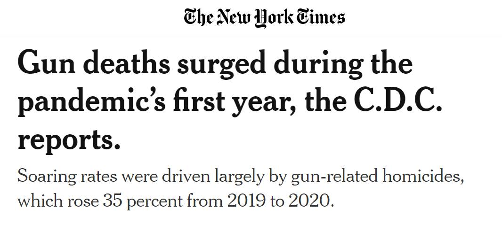

Timeline photos
I can tell you without a doubt, that there are more guns in the homeless community now than any other time I've done this work.
What's interesting is that Covid had a very minimal effect on homeless people. In fact, it might have been a net positive because camp sweeps were way down during Covid.
So, I don't think the traditional theories of mental trauma due to life in a Covid world can apply to the homeless population.
My belief is that it's just a murdery time. People are getting guns because other people have guns. "Don't bring a knife to a gun fight" is pretty standard street wisdom.
A homeless dog recently got shot in the leg by a homeless man with a gun. (He can indeed be a violent dog.)
I do, however, think that gun possession is coming down in the homeless community. Why? Because they use the knowledge that they own a gun as the first form of defense. But then that leads to the gun getting stolen because the person doesn't have a good way of securing the gun. (The guy who shot the dog recently had his gun stolen.)
I believe the guns are going to pool towards drug dealers because drug dealers want guns and they will trade drugs for things they want. So, a lot of guns will be with a few people. This is going to happen throughout the low income community.
I truly believe we are seeing a decrease in gun violence, not because people are any more or less emotionally stressed. A gun loses it's luster and money and/or drugs are more desirable.